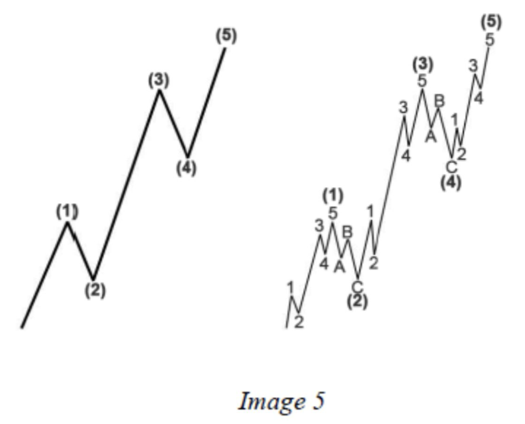
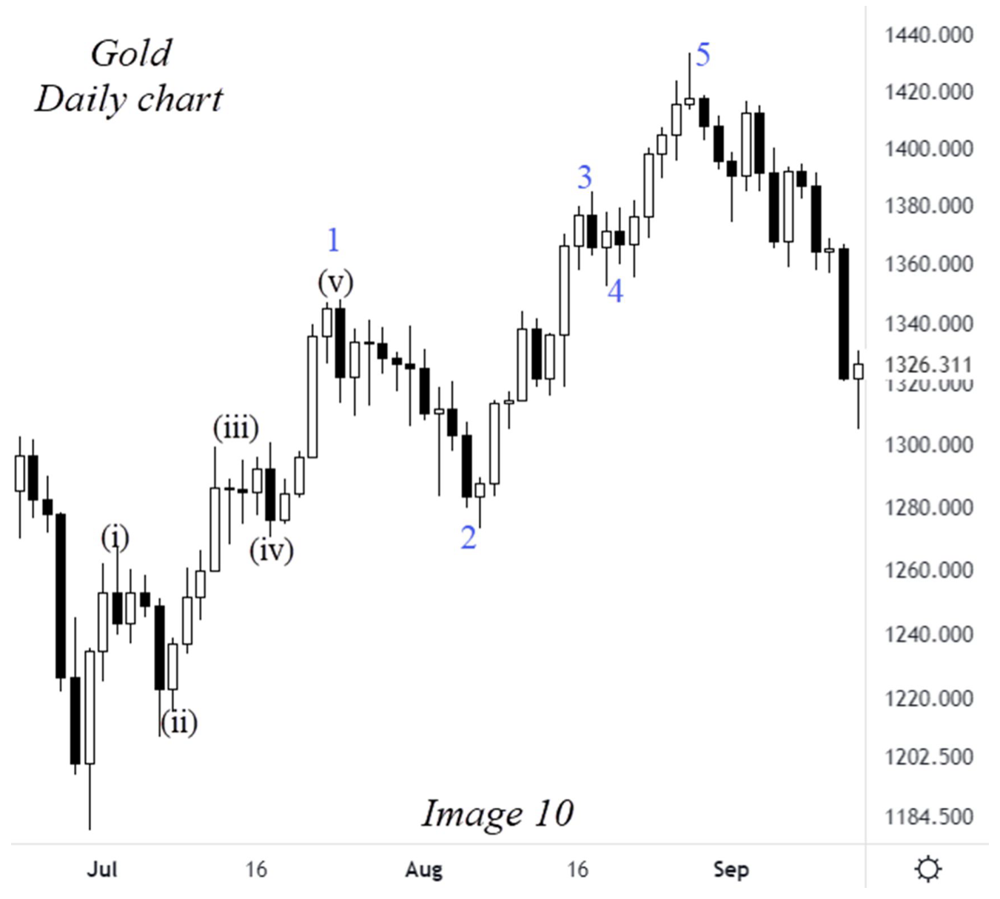
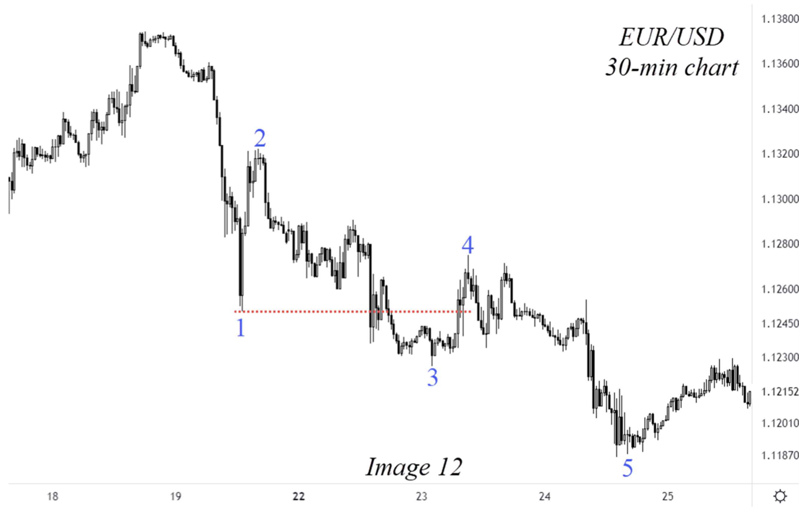

Đọc trang 13–27 trong PDF, theo các mục dưới đây, rồi làm 10 câu hỏi của riêng chương này. Nội dung dưới đây là tóm lược đọc hiểu, không thay thế toàn chương gốc.
Theo dõi năm chân cấp lớn: 1/3/5 theo hướng chính, 2/4 điều chỉnh. Đọc quy tắc gốc wave 1, so chiều dài 1/3/5 và điều kiện overlap. Hình 5 đặt cấu trúc đơn cạnh cấu trúc có sóng con.

Steve Sinclair · Image 5 · PDF tr. 15 · Trích hình để đối chiếu phần đang học; nhãn gốc của tác giả.
Một chân motive được chia nhỏ rõ hơn tạo dạng extension mà sách minh họa bằng chín nhịp. Case Gold ở Hình 10 chọn wave 1 mở rộng; wave 3 vẫn không ngắn nhất trong ba chân motive.

Steve Sinclair · Image 10 · PDF tr. 21 · Trích hình để đối chiếu phần đang học; nhãn gốc của tác giả.
Theo quy ước của sách, leading diagonal nằm ở wave 1 hoặc A của zigzag. So vị trí và cấu trúc con với impulse; Hình 12 minh họa chuyển động giảm có overlap.

Steve Sinclair · Image 12 · PDF tr. 24 · Trích hình để đối chiếu phần đang học; nhãn gốc của tác giả.